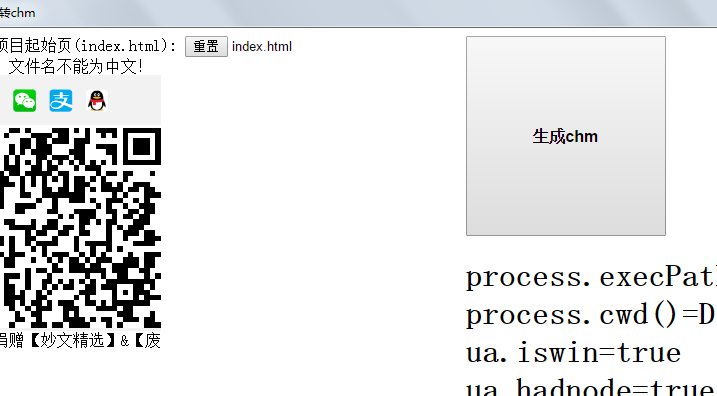

1.假设我有一本《射雕英雄传》的网页小说(目前只支持gb2312编码)，目录如下图这样，想把它打包成一个.chm手册文件
2.现在我们下载并打开《废墟网页转chm》软件
点击下载fbchm.rar(40M)
点击下载fbchm.zip(50M)
界面是这样
3.我们点上图左上部选择文件，就是那个写着重置的小按钮，点击它，然后选中第1步《射雕英雄传》目录里的index.html文件
4.选中index.html文件后确认返回软件界面
5.点上图右边那个生成chm大按钮,生成完成后是这样
6.这时第1步《射雕英雄传》目录里就多了一个fbchm.chm文件，这是我们要的手册文件
7.打开看看.chm文件，它是这样
8.随便点击一个章节，它是这样